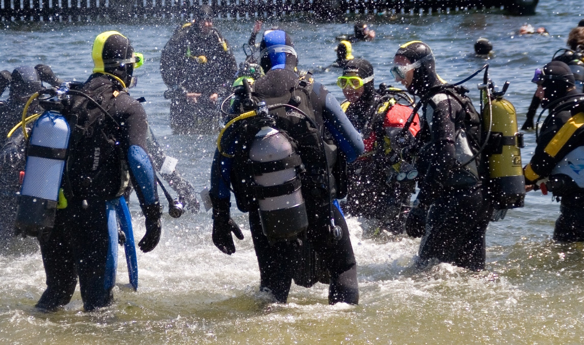
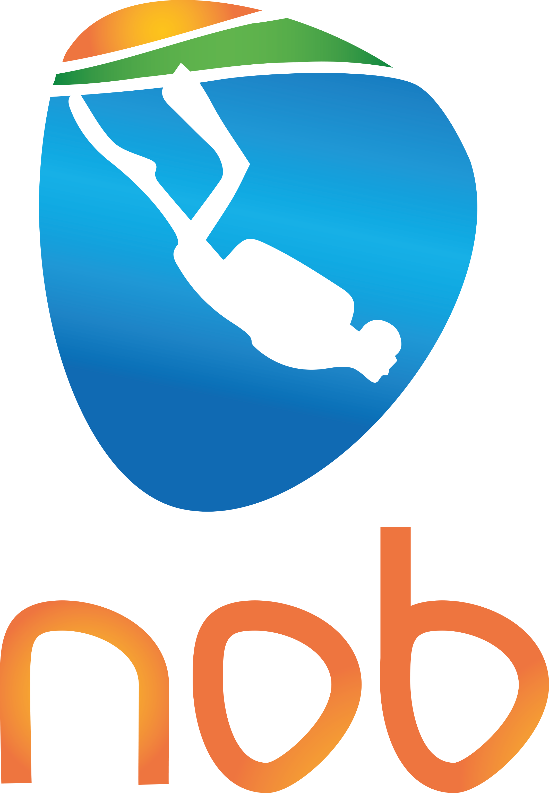

Duikgeschiedenis
Hieronder wordt uw duikervaring uitgevraagd.
Hoeveel jaar ervaring heeft u met duiken?
0
1 -5
6 -10
10-15
16-20
>20
Hoeveel jaar heeft u uw instructeurs diploma?
0
1 -5
6 -10
10-15
16-20
>20
Hoe veel duiken heeft u in het afgelopen jaar gemaakt?
0
1 -50
51 -100
>100
Hoe veel duiken heeft u in totaal gemaakt?
<100
100 -500
501 -1000
1001-2000
>2000
Wat is de maximale diepte die u ooit gedoken heeft? (in msw)
31 -50
51-100
>100
Welke duikapparatuur gebruikt u?
Scuba
Rebreather
Scuba en rebreather
Inleiding
Persoonsgegevens
Duikgeschiedenis
Duikgeschiedenis, ongevallen
Medische gegevens, actueel
Medische gegevens, doorgemaakt
Medicatie op recept
Medicatie zonder recept
Overzicht